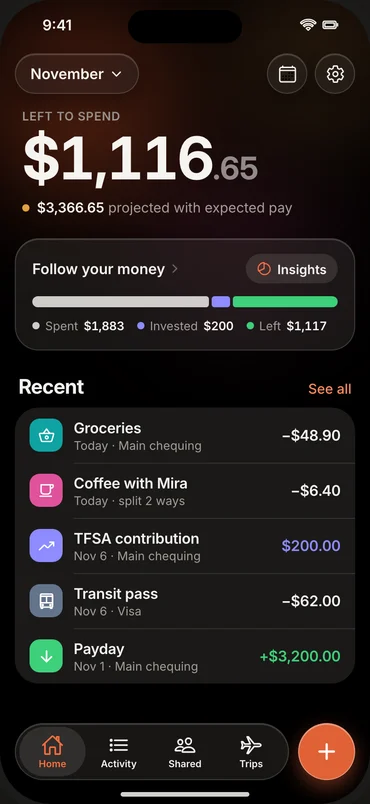
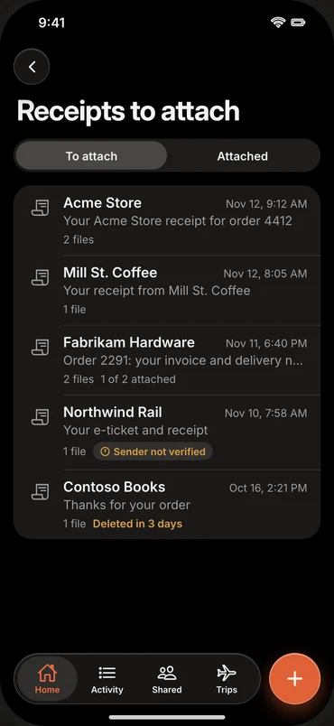
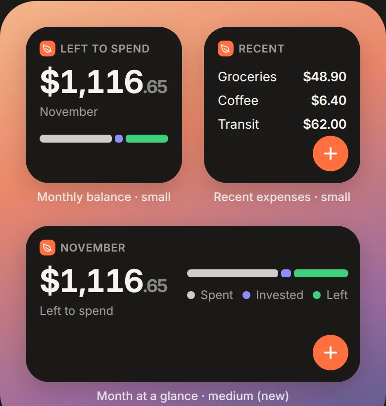

Left to spend, first.
What came in, what you spent and what you invested. Expected pay already counts toward a clearly labeled projection.
ClipSelf-hosted expense tracking
Track expenses, income and investments on iPhone, iPad and the web. Split the bill, keep the receipt, and see where it all went, on a server you run yourself.


Features
Left to spend up front, every dollar traced, bills split the way they were paid, and receipts kept, on every device.
What came in, what you spent and what you invested. Expected pay already counts toward a clearly labeled projection.
ClipEqually, by amount or by percentage. The total stays on the entry; your reports count only your share.
Clip
Photo or PDF, encrypted on your server and read by on-server OCR.

Record a shared cost once. Balances, suggested payments and settling up at the end.


Bills and paydays show up in the calendar before they happen.

Widgets for left to spend and recent expenses.

Biometric lock on iPhone and iPad.
Edits save on the device and sync later.
Local accounts or your own OpenID Connect.
One Compose file or a NixOS module. Nothing leaves the machine you run it on.
Penny never logs in to your bank. You record what matters, in seconds.
Read the code, run it, change it. The web app, the iOS app and the API are all in one repository.
Self-host
deploy/.env.# deploy/.env from deploy/.env.example: the public origin and two secrets $ docker compose -f deploy/compose.yaml up -d --wait ✔ Container penny-postgres-1 Healthy ✔ Container penny-penny-render-1 Healthy ✔ Container penny-api-1 Healthy ✔ Container penny-web-1 Healthy